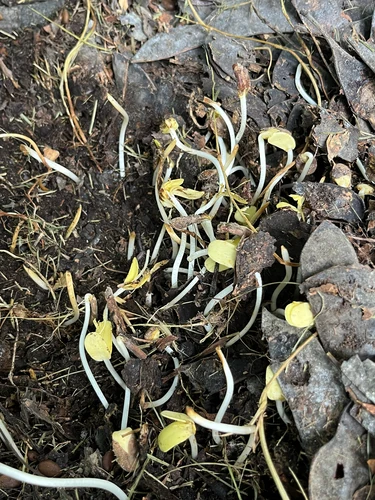

茎细长，叶色变浅
照片里发黄的是子叶，不是成株下部的老叶。白茎又细又长，问题出在出土前后的光照。

现场检查
先看黄的是不是最下面那对子叶，真叶有没有长出来。只有子叶发黄、茎又被拉长时，按光照记录。
鉴别相似表现
成株许多大叶同时发黄、茎却又粗又短，不用这张幼苗照片。那要按成叶的发黄条目核对。
处理选择
先补光，再决定要不要给肥。子叶发黄本身不必摘掉。
后续复查
第一对真叶展开后看颜色。真叶是绿的、节间变短，就不必再按缺肥处理这些子叶。
寄主检查要点
只用于播种苗。盆栽成株的黄叶改用相应的叶片条目。
测量接下来两段节间
逐步改善光照前标出最上方已发育完全的节，之后测同一枝新形成的几段节间。旧徒长段不会缩短，新的节间变短、叶片正常展开才更能说明反应。
转盆前比较朝窗与背窗两面。枝条朝同一窗倾斜、阴面节间较长，支持光照分布不均。若该品种一向自然垂蔓，修剪前先与以往照片对照。